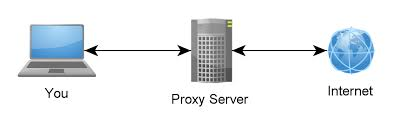

Son los equipos que ponen a disposición de los
clientes los distintos servicios.
En la siguiente lista hay algunos
tipos comunes de servidores y sus propósitos:

Almacena varios tipos de archivo y los distribuye a otros clientes en la red. Pueden ser servidos en distinto formato según el servicio que presten y el medio: FTP, HTTP, etc.

Controla una o más impresoras y acepta trabajos de impresión de otros clientes de la red, poniendo en cola los trabajos de impresión (aunque también puede cambiar la prioridad de las diferentes impresiones), y realizando la mayoría o todas las otras funciones que en un sitio de trabajo se realizaría para lograr una tarea de impresión si la impresora fuera conectada directamente con el puerto de impresora del sitio de trabajo.

Almacena, envía, recibe, enruta y realiza otras operaciones relacionadas con el correo-e (e-mail) para los clientes de la red.

Almacena, envía, recibe, enruta y realiza otras funciones necesarias para la transmisión, la recepción y la distribución apropiadas de los fax, con origen y/o destino una Ordenador o un dispositivo físico de telefax

Realiza funciones relacionadas con la telefonía, como es la de contestador automático, realizando las funciones de un sistema interactivo para la respuesta de la voz, almacenando los mensajes de voz, encaminando las llamadas y controlando también la red o Internet, etc. Pueden operar con telefonía IP o analógica.

Realiza un cierto tipo de funciones en nombre de otros clientes en la red para aumentar el funcionamiento de ciertas operaciones (p. ej., prefetching y depositar documentos u otros datos que se soliciten muy frecuentemente). También «sirve» seguridad; esto es, tiene un firewall (cortafuegos). Permite administrar el acceso a Internet en una red de ordenadores permitiendo o negando el acceso a diferentes sitios web, basándose en contenidos, origen/destino, usuario, horario, etc.

Controla las líneas de módems u otros canales de comunicación de la red para que las peticiones conecten una posición remota con la red, responden las llamadas telefónicas entrantes o reconocen la petición de la red y realizan los chequeos necesarios de seguridad y otros procedimientos necesarios para registrar a un usuario en la red. Gestionan las entradas para establecer la redes virtuales privadas (VPN).

Almacena documentos HTML, imágenes, archivos de texto, escrituras, y demás material web compuesto por datos (conocidos normalmente como contenido), y distribuye este contenido a clientes que la piden en la red.

Servidores que distribuyen multimedia de forma continua evitando al usuario esperar a la descarga completa del fichero. De esta forma se pueden distribuir contenidos tipo radio, vídeo, etc. en tiempo real y sin demoras.

Es el encargado de verificar que un usuario pueda conectarse a la red en cualquier punto de acceso, ya sea inalámbrico o por cable, basándose en el estándar 802.1x y puede ser un servidor de tipo RADIUS.
IR ALA PAGINA PRINCIPAL,HAZ CLICK AQUI.